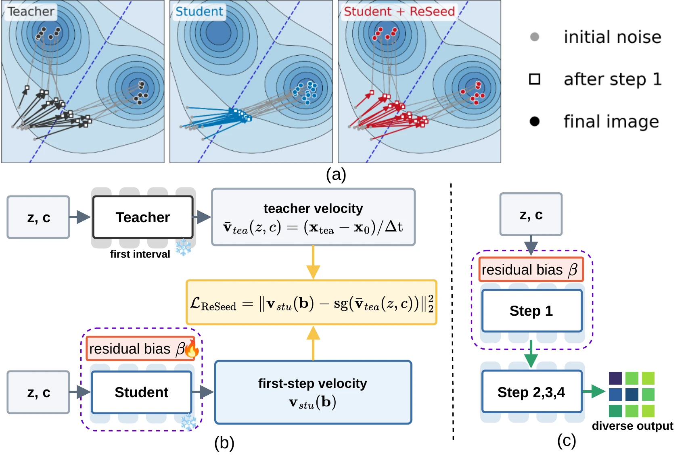

Follow the teacher's first interval
Use the same prompt and initial noise to compute the teacher's first-boundary state.
ReSeed repairs an already distilled generator by training a tiny adapter for its first denoising step. The student backbone and its remaining steps stay frozen.
Graz University of Technology · Swiss Data Science Center · Complexity Science Hub
Manuscript link will be added after the arXiv release.

Few-step distillation can make different initial noises converge to similar outputs. The paper traces this loss to the first, high-noise denoising interval.
For a controlled SD3-Medium test, the teacher handles the student's first interval. The original student then completes steps two through four.
DINOv3 diversity rises from 0.2142 to 0.3117. The first replacement provides 91% of the measured gain from replacing all early intervals.
The teacher replacement is a diagnostic: it uses extra teacher evaluations. ReSeed learns a small correction so inference still uses the same four student steps.

ReSeed matches the student's first-step velocity to the teacher's average velocity over the same interval. Every original student parameter remains frozen.
Use the same prompt and initial noise to compute the teacher's first-boundary state.
Fit only added per-channel biases with a velocity regression loss; no target images or adversarial loss are needed.
Run the unchanged student for steps two through four, with no teacher call at inference.

v̄teacher(z, c) = xteachert₁(z, c) − zt₁ − t₀
The target is the teacher's average velocity over the first student interval. ReSeed minimizes the squared difference between that target and the adapted student's first-step velocity.
Across three image generators and one video generator, the adapters use 0.002–0.004% of denoiser parameters. Diversity improves, while some quality metrics show trade-offs.
DINOv3 diversity with 233,472 trainable bias parameters. FID decreases from 40.22 to 34.65.
On the image models, DINOv3 diversity and FID improve. PickScore and HPS decrease for some models. On video, text alignment and dynamic degree decrease. The paper reports these changes alongside the gains.
| Generator | DINO diversity ↑ | Relative gain | FID ↓ | Added parameters |
|---|---|---|---|---|
| SD3-Medium | 0.2142 → 0.2936 | +37.1% | 37.38 → 33.48 | 0.00356% |
| SD3.5-Medium | 0.2356 → 0.3282 | +39.3% | 32.51 → 29.30 | 0.00322% |
| FLUX.1-dev | 0.1575 → 0.2336 | +48.3% | 40.22 → 34.65 | 0.00196% |
| Wan2.1-T2V-1.3B | 0.3374 → 0.4290 | +27.1% | Not evaluated | 0.00325% |
All values compare a distilled student with the same frozen student plus ReSeed. Image results use the paper's COCO quality and same-prompt diversity protocols; video results use a 320-prompt VBench subset. The video experiment has one adapter training run.
Image comparisons share initial noises across methods. The Wan2.1 comparison below plays original generated videos from DMD2, DFD, and DMD2 + ReSeed with matched prompts and seeds.
Choose a prompt to compare five initial noises across DMD2, DFD, and ReSeed. Each clip has 81 frames at 16 fps.
The clips show five matched initial noises per prompt. Across the full 320-prompt VBench evaluation with eight noises per prompt, video-level DINO diversity is 0.3374 (DMD2), 0.3358 (DFD), and 0.4290 (DMD2 + ReSeed). DFD uses the released checkpoint from Data-Forcing Distillation; ReSeed was trained for 300 updates.
Distribution-matching distillation makes image and video generation fast, but can map different initial noises to similar outputs. ReSeed addresses this in an already distilled model. It adds small residual biases to transformer blocks, trains them to match the teacher's first-interval velocity, and activates them only for the first denoising step.
Across SD3-Medium, SD3.5-Medium, FLUX.1-dev and Wan2.1-T2V-1.3B, the paper finds substantial gains in same-prompt feature diversity. The result is a lightweight post-distillation correction; it does not require retraining the student or adding sampling steps.
The arXiv identifier will be added when the manuscript is released.
@misc{tang2026reseed,
title = {A First-Step Bias Restores Lost Diversity in Diffusion Model Distillation},
author = {Tang, Wenwu and Wang, Dong and Cheng, Yun and Saukh, Olga},
year = {2026},
note = {Manuscript}
}